4. Paso del Modelo Conceptual al Lógico
4.1. Pérdidas semánticas
El modelo (conceptual) E-R de Peter Chen es mucho más potente que el modelo (lógico) relacional de Edgar Codd. Esto provoca que haya realidades que podemos representar a nivel conceptual (E-R) que no podemos representar a nivel lógico (relacional), como son las mínimas de cualquier participación (1,n) y cualquier participación mínima 1 en las n-arias (ternarias, cuaternarias, etc.).
Esta carencia la resolveremos con una restricción de integridad que consiste en describir, de momento en lenguaje natural, qué aspectos del modelo conceptual (E-R) estamos pasando por alto en el lógico (relacional) para que los tengamos en cuenta en el modelado físico (el que depende del SGBD elegido).
Una pérdida semántica puede explicarse de muchas maneras:
- No podemos expresar solamente con tablas lo que nos indica gráficamente el diagrama ER
- No podemos expresar en la fase 2 lo que nos indican en la fase 1
- El modelo lógico no puede expresar todo lo que expresa el modelo conceptual
- El diagrama de Chen es más rico que el modelo de Codd
En este punto vamos a estudiar, paso a paso, cómo transformar el modelo conceptual de datos en el modelo lógico, concretamente como pasar del modelo E-R al modelo relacional. Para ello iremos viendo cada uno de los elementos que forman el modelo E-R y cuál es su correspondencia en el modelo relacional.
El primer paso será transformar las entidades del modelo E-R en sus relaciones (tablas) del modelo relacional. El segundo paso será transformar las relaciones del modelo E-R al modelo relacional, teniendo en cuenta que algunas formarán relaciones (tablas) mientras que otras simplemente modificarán las correspondientes a las entidades.
Nota
Recordad que una relación en el modelo E-R no es lo mismo que una relación (tabla) en el modelo relacional.
4.2. Transformación de Entidades
Las entidades se transformarán en una relación (tabla). Cada atributo de la entidad se transformará en un atributo o campo de la relación. Cada dominio de los atributos se transformará en el dominio del atributo o campo correspondiente de la Relación.
La clave primaria o principal de la relación estará formada por la clave principal o identificador de la entidad que estamos transformando (simple o compuesto). Recuerda que la clave principal se indica en el modelo relacional subrayando los campos que la forman o mediante la cláusula CP/PK.
Las claves ajenas o foráneas (recordamos, aquellos atributos o campos que son clave principal o candidata en otra Relación) son representadas de diferentes maneras, algunos autores las representan en cursiva, otros con subrayado punteado bajo el nombre, etc. Nosotros utilizaremos una flecha a la derecha del nombre o la cláusula CAj/FK, siempre indicando la tabla y atributos referenciados. Vemos más adelante cuando aparecen estas claves.
Suponiendo una tabla CLIENTE con CP dni, la tabla de CUENTAS relacionadas con las 2 nomenclaturas mencionadas o incluso una combinación de las mismas sería:
-
CUENTA (num_cuenta, saldo, id_cliente)
CP: num_cuenta
CF: id_cliente → CLIENTE {dni}
VNN: saldo -
CUENTA (num_cuenta, saldo*, id_cliente → CLIENTE{dni})
-
CUENTA (num_cuenta, saldo*, id_cliente) CP: num_cuenta
CF: id_cliente → CLIENTE {dni}
VNN: saldo
importante
Como ya deberías saber, escojas la notación que escojas, debes de ser coherente y aplicar siempre la misma en todo el modelado.
Si usas una notación redundante, como la última mostrada, es muy importante que no entre en contradicciones, por ejemplo indicando atributos distintos para las claves en la primera fila y en los detalles posteriores.
En el modelado anterior podemos ver que la relación (tabla) se llama CUENTA, que la clave principal o primaria es num_cuenta y que tiene como clave foránea id_cliente (referenciando el dni de la tabla CLIENTE).
Veamos ahora un ejemplo con atributos de distintos tipos:
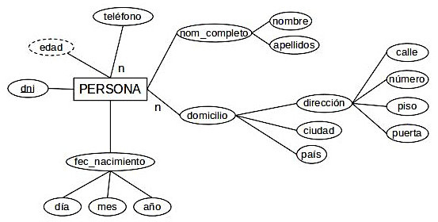
- Clave primaria → dni
- Compuestos → f_nac.dia, f_nac.mes, f_nac.anyo nombre, apellidos (este se ha puesto sin prefijo, ambas opciones son válidas)
- Multivaluados → {telefono}n
- Derivados → edad = fecha_actual.anyo – f_nac.anyo
- Compuestos multivaluados → {domicilio.direccion.calle, domicilio.direccion.numero, domicilio.direccion.piso, domicilio.direccion.puerta, domicilio.ciudad, domicilio.pais}n o directamente {calle, numero, piso, puerta, ciudad, pais}n
Quedando la transformación de la siguiente manera:
-
PERSONA (dni, f_nac.dia, f_nac.mes, f_nac.anyo, {calle, numero, piso, puerta, ciudad, pais}n, {telefono}n, nombre, apellidos, edad*)
edad = fecha_actual.anyo – f_nac.anyo (*)
(*)También podemos escribir los campos derivados en lenguaje natural:
edad = años transcurridos entre la fecha de hoy y su dia de nacimiento
Atención
Presta siempre mucha atención a cómo se transforman los atributos derivados, compuestos, multivaluados y compuestos-multivaluados.
4.3. Transformación de Relaciones BINARIAS
4.3.1. Cardinalidad N:M
Estas relaciones del modelo E-R se transformarán en una relación o tabla nueva del modelo relacional, que tendrán como campos los atributos propios de la relación (si hay) y las claves primarias de las 2 entidades que relacionan.
- Las CP de las entidades relacionadas serán obviamente claves foráneas en esta nueva tabla. Una clave foránea (simple o compuesta) distinta por cada entidad, por tanto 2 claves foráneas.
- La clave primaria es el conjunto de las 2 CP de las entidades relacionadas.
- Si algún atributo de la relación E/R era identificador (subrayado) también se añade a la clave principal.
- Las participaciones mínimas 1, no solo aquí, en toda participación (1,n) no pueden ser expresadas en modelo relacional (pérdida semántica) y necesitan una restricción adicional. Las 0 no necesitan ninguna actuación.
Atención
Ante cualquier participación (1,n) en una relación binaria, indicamos mediante una restricción de integridad que todas las ocurrencias de esa entidad están obligados a participar en la relación.
Veamos un ejemplo: Supongamos que tenemos una academia de informática y en nuestro modelo de datos aparece una parte como la siguiente:
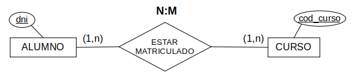
Por un lado tendremos la tabla ALUMNO, por otro la tabla CURSO y además aparecerá una nueva tabla, fruto de la relación N:M Estar matriculado, que podemos llamar MATRICULA. La transformación quedaría así (los atributos NO CLAVES son inventados, pues no aparecen en el ejemplo):
-
PERSONA (dni, nombre, fecha_nacimiento)
CURSO (cod_curso, nombre, tipo_curso, fecha_comienzo)
MATRICULA (dni, cod_curso)
CF: dni → ALUMNO
CF: cod_curso → CURSO
RESTRICCIÓN DE INTEGRIDAD (por pérdida semántica): Todo ALUMNO tiene al menos un CURSO asociado y viceversa.
En este caso no se ha indicado el campo al que hacen referencia las CF por tener el mismo nombre en ambas tablas. Es habitual encontrar esta omisión incluso cuando los nombres no coincidan, aunque no es recomendable.
Podemos observar cómo la clave principal de la nueva tabla MATRICULA está formada por la clave principal de ALUMNO más la clave principal de CURSO y además ambas a su vez son claves foráneas por ser claves principales en sus respectivas tablas.
Por otro lado, puesto que la participación mínima es 1 en ambas entidades, se añade la restricción adicional por pérdida semántica indicando que todos los elementos de esas entidades están obligados a participar en la relación. Para las participaciones mínimas 0 no haría falta indicar nada.
Para indicar en los campos que forman parte de la clave principal y al mismo tiempo son o forman parte de una clave foránea existen distintas opciones:
- Con las distintas cláusulas CP y CF ya comentadas, se añadan subrayados o no a los campos.
- Subrayado simple indicando que es CP y además una flecha indicando que es CF y señalando la tabla y campo a la que que hace referencia.
- MATRICULA (dni → ALUMNO{dni}, cod_curso → CURSO{cod_curso})
- Subrayado doble para indicar que es CP+CF, necesita igualmente una cláusula o la flecha con la indicación para saber a que tablas y atributo hace referencia.
- MATRICULA (dni → ALUMNO{dni}, cod_curso → CURSO{cod_curso})
Para las claves foráneas se recomienda usar las cláusulas para no recargar la declaración de los campos, opcionalmente se puede añadir el subrayado, aunque resulte redundante
Importante
Las claves principales múltiples, al igual que las foráneas, se marcan en una misma cláusula CP. Nunca hay más de una clave principal, como mucho una compuesta.
4.3.2. Cardinalidad 1:N
Las relaciones del modelo E-R con cardinalidad 1:N no se transforman en una nueva tabla. Lo que se hará será:
- Se añade a la tabla generada a partir de la entidad que actúa con cardinalidad N, un nuevo atributo que será la clave principal de la tabla generada a partir de la entidad que actúa con cardinalidad 1, donde pasará a actuar como clave foránea.
- Si existen atributos de relación, se añaden a la misma tabla.
Veamos un ejemplo:
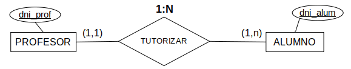
La transformación de este fragmento dará lugar a dos tablas, la tabla PROFESOR y la tabla ALUMNO, quedando de la siguiente forma:
-
PROFESOR (dni_profesor, nombre, fecha_incorporacion)
ALUMNO (dni_alumno, correo, telefono, dni_profesor_tutor)
CF: dni_profesor_tutor → PROFESOR {dni_profesor}
VNN: dni_profesor_tutor
RESTRICCIÓN DE INTEGRIDAD (por pérdida semántica): Todo PROFESOR debe tutorizar a un ALUMNO como mínimo.
Podemos apreciar que en la transformación, el dni_profesor ha sido añadido a la tabla ALUMNO con el nombre dni_profesor_tutor (para que sea más significativo lo que representa) y se ha marcado como clave foránea.
Esta transformación nos permitirá en todo momento conocer los ALUMNOs tutelados a partir de un PROFESOR, para ello bastará con ver el dni del PROFESOR y buscar todos los ALUMNOs que tengan ese valor en el atributo dni_profesor_tutor. Por el contrario si queremos saber quién es el tutor de un ALUMNO, bastará con tomar el valor del campo dni_profesor_tutor y ver a qué tupla pertenece en la tabla PROFESOR.
Nota
Si nos fijamos en la participación del ALUMNO (1,1), por el 1 de la mínima debe llevar la restricción VNN, garantizando que todo alumno tiene tutor.
En cambio, la otra mínima 1, en la (1,n) es una pérdida semántica, con lo que añadimos la restricción de integridad de que todo PROFESOR debe ser tutor de al menos un ALUMNO
4.3.3. Entidades débiles en 1:N
Recuerda
Recuerda que una entidad débil es aquella que necesita de una fuerte para poder existir.
Atención
En este curso no estudiaremos debilidades con cardinalidad N:M.
Al transformar una entidad débil estaremos aplicando una relación 1:N sobre la misma; eso significa que incluimos como clave foránea la CP de la entidad fuerte. Al ser débil además:
- La participación en la relación es (1, 1) con lo que la clave foránea referida a la entidad fuerte no puede ser nula.
- Se aplica una restricción de borrado en cascada a esta clave foránea.
Además vimos que la relación entre la entidad Fuerte y la entidad Débil podía ser de dos tipos: de existencia o de identificación. La transformación de ambas es muy parecida, solo hay algún detalle que debemos tener en cuenta.
DEPENDENCIA DE EXISTENCIA
Comencemos por una entidad débil con dependencia de existencia como puede ser la siguiente. CUENTA_BANCARIA es la entidad fuerte y MOVIMIENTO la débil, con dependencia de existencia, lo que significa que tiene una CP que la identifica de forma única. Obligatoriamente la participación a la izquierda es (1, 1) al ser MOVIMIENTO la entidad débil y esto obliga en caso de debilidades de existencia a marcar la CF referida a su entidad fuerte como VNN.
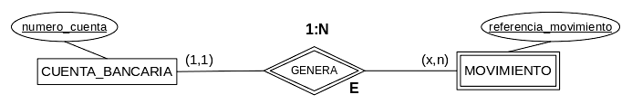
Tenemos pues una tabla llamada CUENTA_BANCARIA cuya CP es el número de cuenta y otra llamada MOVIMIENTO cuya CP es la referencia del movimiento, que la identifica de manera única. El resto de campos nos son indiferentes ahora.
La entidad CUENTA_BANCARIA se transforma con el mismo método del apartado anterior. A MOVIMIENTO, además, se le añade la clave de CUENTA_BANCARIA como clave foránea no nula y una restricción de borrado en cascada.
-
CUENTA_BANC (num_cuenta, ...)
MOVIMIENTO (ref_mov, cuenta, ...)
CF: cuenta → CUENTA_BANC {num_cuenta} B:C
VNN: cuenta
Nota
"cuenta" podría haberse llamado "num_cuenta" igual que en la otra tabla, de hecho es muy habitual, pero usamos un nombre distinto aquí para diferenciarlas bien y para evidenciar que puede hacerse.
Podemos ver que la CP de MOVIMIENTO es ref_mov, después tenemos cuenta que es una clave foránea que hace referencia a la CP de la entidad fuerte CUENTA_BANC (num_cuenta). Esta referencia (como toda CF) puede ser nula por defecto, así que al existir una debilidad de existencia tenemos que indicar expresamente VNN.
Por otro lado, a la clave foránea cuenta hay que añadirle también una restricción de borrado en cascada (B:C), aunque esto es independiente del tipo de debilidad.
Como siempre, si la participación al otro lado fuese (1,n) esa participación mínima es una pérdida semántica y necesita su correspondiente restricción de integridad.
DEPENDENCIA DE IDENTIFICACIÓN
Transformaremos las entidades en sus correspondientes tablas y esta vez se añade a la entidad débil la CP de la entidad fuerte no solo como clave foránea sino también como parte de la clave principal, junto con los atributos identificadores (parciales) propios. Esta clave foránea llevará una restricción de borrado en cascada, pero esta vez no se necesita añadir específicamente la restricción VNN, esto es porque al formar parte de la clave principal de la entidad ya lleva esta restricción implícitamente.
Al transformar una entidad débil con dependencia de identidad en una tabla, siempre incluiremos como CP de esta entidad débil una clave compuesta que contenga todos los campos de la CP de la entidad fuerte y todos los campos identificadores de la entidad débil.
Veamos ahora como transformar una debilidad de identificación (incluye existencia) mediante el siguiente caso:
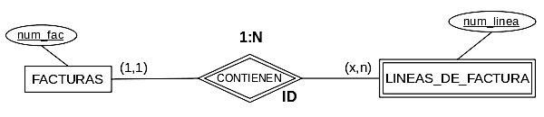
-
FACTURAS (num_fac, ...)
LINEAS_FACTURA (num_factura, num_linea, ...)
CP: {num_factura,num_linea}
CF: num_factura → FACTURAS {num_factura} B:C
Tenemos pues una tabla llamada FACTURAS cuya CP será num_factura y otra llamada LINEAS_FACTURA que tiene un número de línea (num_linea) que aunque se marcaría como identificador subrayándolo en E/R no la identifica de manera única y no forma una CP (dependencia de identificación).
Por tanto, se añade como clave foránea con restricción de borrado en cascada la CP de FACTURAS (num_factura). Por otro lado, la clave principal es compuesta, formada por esa CP proveniente de FACTURAS más los identificadores propios de LINEAS_FACTURA (num_linea): {num_factura, num_linea}
Puesto que num_factura forma parte de la clave no necesitamos indicar expresamente la restricción VNN, sería redundante.
4.3.4. Cardinalidad 1:1
Antes de transformar esta relación, vamos a analizar que pasa con sus participaciones mínimas.
Una relación 1:1 significa que las filas se corresponden una a una entre las 2 tablas, pero las participaciones mínimas 0 hacen aparecer huecos. En una tabla con participación mínima 1 todas sus filas tienen una correspondencia con la otra, en cambio en una tabla con participación mínima 0 algunas filas no participan en la relación y por tanto no tienen correspondencia con la otra tabla.
Una vez entendido este punto vamos a ver que existen varias opciones para transformar una relación 1:1 en el modelo relacional.
Primera opción:
Mantener las tablas generadas a partir de las entidades y que la clave principal de una de ellas se añada como clave foránea en la otra tabla, igual que en una relación 1:N, solo que ahora cualquiera podría ser la tabla que recibe la clave principal de la otra como clave foránea. Además esa clave foránea llevará una restricción de valor único, ya que no se repite, al ser la cardinalidad 1:1.
Esta opción es recomendable si alguna o ambas las tablas tienen una participación (0,1). Lo ideal es elegir la tabla con participación mínima 1 (si hay alguna) como tabla que recibe la clave de la otra, al no haber huecos, la clave foránea no tomará valores nulos (VNN).
Si ambas tienen participación (0,1) los valores nulos son inevitables, pero la tabla que más participe en la relación será la que menos tenga, y por tanto esa debería ser la que reciba la clave de la otra.
Si ambas tienen participación (1,1) la elección es libre, pero conviene considerar si no es mejor la segunda transformación en ese caso.
Importante
Para garantizar la relación 1:1 esta clave foránea no puede repetirse, por tanto llevará además la restricción de valor único, en caso contrario estaríamos convirtiendo la relación en 1:N.
Segunda opción:
Unir las tablas en una sola. Es recomendable si tenemos la garantía de que ambas tablas tienen el mismo número de filas, es decir, que ambas participaciones son (1,1). Una de las claves lo será de la tabla fusionada y la otra será un campo VNN. Si además comparten la misma clave principal entonces ya es una necesidad, y sería absurdo elegir la primera opción.
En caso de que una de las entidades tenga una participación (0,1), solo conviene aplicarla si la inmensa mayoría de las ocurrencias participan en la relación, porque si no, la tabla resultante tendrá muchos campos nulos.
Además, como la participación mínima 0 hace aparecer huecos, significa que los campos de la otra tabla son todos nulos y por tanto no pueden ser clave primaria. Si hay una entidad con participación (0,1) debemos elegirla para la clave primaria, pues la otra tendrá huecos. En cambio, si ambas tablas tienen participación (0,1), nunca debemos aplicar esta solución.
Tercera opción:
La tercera opción es mantener ambas tablas y colocar cada una de las claves principales como claves foráneas con restricción de valor único en la otra tabla. Esto conlleva introducir una redundancia en nuestro modelo, pero algunas veces esta redundancia puede ser de mucha utilidad para simplificar determinadas consultas.
Cabe tener en cuenta que si las tablas tienen distinta CP solo la segunda opción superaría la fase de normalización, las otras 2 si aplicamos las reglas de normalización acabarán transformadas en la segunda igualmente.
Ejemplo con las tres soluciones
Veamos un ejemplo:
Supongamos que tenemos un modelo E-R que representa parte de la administración pública de nuestra comunidad en la que se representan los altos cargos de la administración y están relacionados con los coches que tienen asignados para sus desplazamientos. (Suponemos que los altos cargos que tienen coche oficial solo tienen uno y que no hay ningún coche oficial que no se haya asignado a un alto cargo).
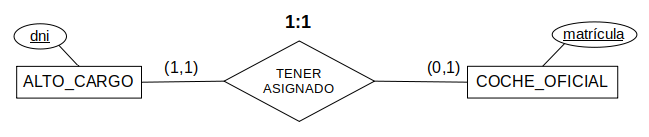
Supongamos que a partir de las entidades obtenemos las siguientes tablas (los campos son inventados pues no aparecen en el modelo E-R del que partimos).
-
ALTO_CARGO (dni, nombre, puesto, fecha_posesion)
COCHE_OFICIAL (matricula, marca, modelo, color, fecha_matricula)
Primera opción:
Si las participaciones fuesen (1,1) en ambos casos, sería indiferente a qué tabla llevar una clave foránea, nos guiaríamos por el contexto. Pero al tener una participación con (0,1) eso nos quiere decir que hay algún ALTO_CARGO que no tienen COCHE_OFICIAL. En esas tuplas los campos correspondientes al COCHE_OFICIAL tendrán valor NULO.
Por tanto, si colocásemos el campo matricula en la tabla ALTO_CARGO como clave foránea tendríamos nulos. Lógicamente, hacemos lo contrario y colocamos el atributo dni como clave foránea en la tabla COCHE_OFICIAL, que representará quien tiene asignado ese coche. Conviene no olvidar la restricción de valor único para la CF o estamos convirtiendo la relación en 1:N.
-
ALTO_CARGO (dni, nombre, puesto, fecha_posesion)
COCHE_OFICIAL (matricula, marca, modelo, color, fecha_matricula, dni)
CF: dni → ALTO_CARGO {dni}
ÚNICO: dni
VNN: dni -- por la participación (1,1) de COCHE_OFICIAL
Nota
Esta opción es recomendable cuando no muchos ALTO_CARGO tienen COCHE_OFICIAL asignado o se van a hacer muchas consultas sobre cargos donde no importe su coche o coches sin que importe a quién está asignados.
Segunda opción:
La segunda opción une en una sola tabla las dos anteriores:
- CARGO_COCHE (dni, nombre, puesto, f_pos, matricula, marca, modelo, color, f_mat)
De nuevo, si ambas participaciones fuesen (1,1), sería indiferente, aunque la clave no elegida debería llevar VNN. Al tener una participación con (0,1) hay tuplas con los campos correspondientes al COCHE_OFICIAL a valor NULO y por tanto la matricula no puede ser clave primaria. Elegimos por tanto como clave primaria el dni.
Nota
Esta solución es solo recomendable si la inmensa mayoría de ALTO_CARGO tiene COCHE_OFICIAL asignado.
Tercera opción:
Se trata de añadir una CF a cada tabla, de forma redundante.
-
ALTO_CARGO (dni, nombre, puesto, fecha_posesion, matricula)
CF: matricula → COCHE_OFICIAL {matricula}
ÚNICO: matriculaCOCHE_OFICIAL (matricula, marca, modelo, color, fecha_matricula, dni)
CF: dni → ALTO_CARGO {dni}
ÚNICO: dni
VNN: dni -- por la participación (1,1) de COCHE_OFICIAL
Nota
Esta opción es solo aceptable si se van a hacer muchas consultas cruzadas donde importen los datos tanto del COCHE_OFICIAL como del ALTO_CARGO pero por organización o por tener pocos altos cargos con coche asignado la primera no es conveniente.
4.4. Transformación de Relaciones REFLEXIVAS
Las relaciones reflexivas se resuelven igual que las anteriores para cada cardinalidad, solo que en este caso las "dos" entidades a las que se refiere la relación son la misma, y por tanto deberemos "duplicar" algún campo y cambiar algún nombre cuando "movamos" las claves.
4.4.1. Cardinalidad 1:N
Supongamos que estamos modelando la pertenencia a un club exclusivo en el que los clientes solo pueden ser admitidos si vienen recomendados por otros clientes. Tendríamos algo así:
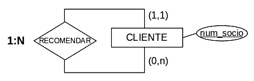
Pues bien, la tabla donde añadir la CP de CLIENTE como Clave Foránea es la propia tabla CLIENTE. Por ello añadimos otro campo num_socio al que cambiaremos el nombre del atributo para que sepamos a qué corresponde (y por obligación al no poder haber 2 campos con el mismo nombre). Este nuevo atributo es el que actúa como clave foránea, en este caso no es válido dejar un único atributo CP+CF puesto que un campo no puede referenciarse a él mismo.
- CLIENTE (num_socio, nombre, recomendado_por_cliente)
CF: recomendado_por_cliente → CLIENTE {num_socio}
VNN: recomendado_por_cliente
Podemos ver que el nuevo campo al que hemos llamado recomendado_por_cliente representará al CLIENTE que realizó la recomendación, ya que un único num_socio no puede a la vez identificar al propio CLIENTE y representar al que lo recomendó.
La restricción VNN viene dada por la participación (1,1), todos los clientes vienen recomendados. De no existir esta obligación no se necesitaría la restricción y simplemente el nuevo campo podría admitir valores nulos en aquellos clientes que no fueron recomendados por nadie. Piensa en ello y ponte varios ejemplos para que veas lo que puede influir la participación a la hora de decidir que campos pueden ser nulos o no.
4.4.2. Cardinalidad 1:1
Esta vez no existen 3 opciones, ya que al ser ambas tablas la misma no se pueden fusionar (opción 1) ni cruzar claves foráneas (opción 3). De modo que simplemente se procede como en el caso anterior 1:N, añadiendo a la tabla un campo que actúe como clave foránea referenciando a la CP de la propia tabla, con la particularidad que además esta CF tiene la restricción de valor único.
4.4.3. Cardinalidad N:M
Supongamos ahora una relación que represente qué miembros del club se conocen entre ellos:
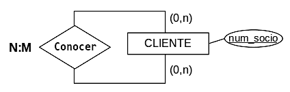
En este caso tenemos que añadir una nueva tabla que relacione a cada CLIENTE con cada uno de sus conocidos de entre los miembros. Por tanto la tabla llevará 2 copias de la CP, cada una representando a un CLIENTE y por tanto siendo también 2 claves foráneas. La CP de esta tabla será la combinación de estas 2 CF.
-
CLIENTE (num_socio, nombre, recomendado_por* → CLIENTE)
"recomendado_por" viene de la relación anterior, en nomenclatura abreviada. El siguiente está con cláusulas para que quede más claro.Conoce (cliente_1, cliente_2)
CP: {cliente_1, cliente_2}
CF: cliente_1 → CLIENTE {num_socio}
CF: cliente_2 → CLIENTE {num_socio}
RESTRICCIÓN DE INTEGRIDAD (por pérdida semántica): La CP no puede repetirse cambiando el orden de los CLIENTEs.
Esta vez hemos creado 2 campos para la nueva tabla, cliente_1 y cliente_2, cada uno es independientemente una CF de CLIENTE, ya que cada campo representa a uno de los CLIENTEs y a otro que lo conoce. La combinación de ambos CLIENTEs es la CP, garantizando poder incluir todas las parejas de conocidos sin duplicar la información.
Si existiese algún atributo de la relación se añadiría a la tabla también, como por ejemplo la fecha en que se conocieron.
Por otro lado, hay que tener en cuenta que en este caso, que el cliente_1 con num_socio "X" conozca al que tiene el num_socio "Y" (cliente_2) ya implica que "Y" conoce al "X", por tanto se debe limitar que se cambie el orden en el que aparecen los 2 CLIENTEs en la clave con una restricción adicional. No siempre es así, piensa en una relación como la anterior de recomendaciones pero esta vez N:M donde todos los CLIENTEs pudiesen recomendar a otros, por si los demás quieren conocerlos, que X recomiende a Y ya no significa lo mismo que Y recomendando a X, así que la restricción anterior no sería válida.
4.5. Transformación de Relaciones TERNARIAS
Para las relaciones ternarias siempre se crea una nueva tabla con las claves principales de cada una de las respectivas entidades y los atributos de la relación E-R (si hay). Además cada una de ellas será respectivamente CF referenciando a la tabla original. Recuerda que las claves foráneas compuestas se deben poner juntas ya que no funciona cada campo por separado para referenciar a los campos de la tabla original sino como conjunto.
Dependiendo de la cardinalidad se aplicará una CP u otra a la nueva tabla, además de ciertas restricciones, pero antes un inciso sobre las participaciones.
4.5.1. Pérdida semántica en TERNARIAS
En una RELACIÓN BINARIA (1:1, 1:N, N:M) podemos detallar cómo se relacionan dos entidades indicando sus participaciones.
- Por ejemplo, en una relación ESTUDIANTE ← MATRICULA → ASIGNATURA podemos determinar cuantos ESTUDIANTES concretos pueden matricularse en una ASIGNATURA concreta.
- Si decidimos que ESTUDIANTE (1,n) ← MATRICULA → (0,n) ASIGNATURA estaremos expresando que un ESTUDIANTE concreto puede estar matriculado o no en una o varias ASIGNATURAS y, una ASIGNATURA concreta debe tener al menos un ESTUDIANTE matriculado.
- De esta manera, en una RELACIÓN BINARIA, controlamos cómo se comportan todas las ocurrencias de todas las entidades (o casi). Existe únicamente pérdida semántica en el caso de las participaciones mínimas 1 en las N:M, como hemos visto antes.
En las ternarias no ocurre lo mismo.
En una RELACIÓN TERNARIA (1:1:1, 1:1:N, ...) podemos detallar cómo se relacionan las entidades dos a dos, indicando sus participaciones en pares. Lo vemos más fácil con un ejemplo, la reserva de pistas de un club, con unos horarios predefinidos.
Supongamos que tenemos una relación ternaria que relaciona 3 entidades, PERSONA, PISTA y HORARIO, para definir como se hacen las reservas de pistas de un club. Sin entrar en cuáles son sus participaciones, veamos qué se puede determinar con una relación ternaria y qué no.
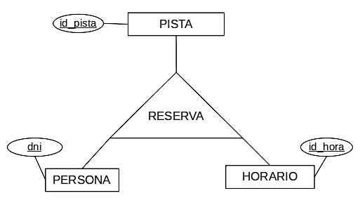
- Podemos determinar las RESERVAS de una PERSONA i PISTA concretas y con qué HORARIO, que PERSONA hace RESERVAS de una PISTA y HORARIO concretos, o en un HORARIO concreto qué PERSONA ha reservado una PISTA.
- En resumen, podemos ver como actúa una pareja de entidades con respecto a la tercera. Por ejemplo cuantas PERSONAs pueden reservar una pareja de PISTA y HORARIO).
- Lo que no podremos determinar en una TERNARIA es:
- Si todas las ocurrencias de PERSONA/PISTA/HORARIO participan en la relación necesariamente. Por tanto, no sabemos si hay personas que no reservan nada, pistas que puedan estar vacías, o horarios sin elegir.
- Cómo se relacionan 2 entidades sin tener en cuenta la tercera. Por ejemplo, si una PERSONA puede reservar más de una PISTA o no; a secas, sin tener en cuenta el HORARIO.
- De esta manera, en una RELACIÓN TERNARIA, solo controlamos cómo se comportan todas las ocurrencias de las entidades de dos a dos, no pudiendo modelar, diseñar, controlar... cómo se comporta una entidad de manera individual. Es lo que técnicamente se denomina una pérdida semántica, que ocurre además para cualquier relación de grado superior a 2.
4.5.2. Cardinalidad N:M:P
Para las relaciones ternarias con cardinalidad N:M:P se actúa de manera similar a las binarias, siendo la CP la combinación de las 3 la claves primarias de las entidades que participan en la relación.
Veamos un ejemplo:
Supongamos una relación donde los actores pueden actuar libremente en películas haciendo cualquier personaje, por tanto, sin entrar en más detalles, la cardinalidad es N:M:P.
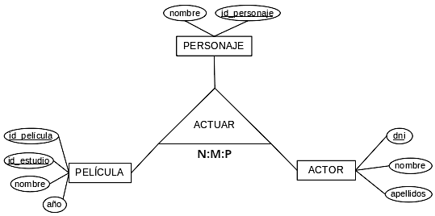
- ACTUAR (id_pelicula, id_estudio, id_personaje, dni)
CP: {id_pelicula, id_estudio, id_personaje, dni}
CF: {id_pelicula, id_estudio} → PELICULA {id_pelicula, id_estudio}
CF: id_personaje → PERSONAJE {id_personaje}
CF: dni → ACTOR {dni}
Por tanto añadimos una tabla actuar donde la CP será {id_pelicula, id_estudio, id_personaje, dni}, combinando todas las claves de las entidades y cambiando el nombre de id en PERSONAJE a id_personaje para que quede más claro que representa.
Por otro lado, además estos campos deben ser claves foráneas de sus tablas respectivas. Ten en cuenta que las claves compuestas se ponen juntas, en este caso {id_pelicula, id_estudio}.
4.5.3. Cardinalidad N:M:1
Para este caso la CP está formada por la combinación de las claves primarias de las 2 entidades que actúan con cardinalidad N en la relación. En cambio, a la parte correspondiente a la clave principal de la tabla que actúa con cardinalidad 1 solo se le añade una restricción de valor no nulo, puesto que siempre participan las 3 entidades.
Para ejemplificar esta relación usaremos la relación de reserva de pistas mencionada anteriormente, a la cual se le puede dar distintas interpretaciones, una de ellas concuerda con esta cardinalidad.
Consideramos que una pareja HORARIO-PISTA la pueden reservar varias PERSONAs, así permitimos reservas grupales, ya que es lo más probable, y registramos a toda la gente que usa las PISTAs mediante la RESERVA, sin necesidad de otra relación. Por otro lado, parece evidente que una pareja PERSONA-HORARIO solo puede reservar una PISTA, ya que no puedes usar varias a la vez. En cambio, una pareja PERSONA-PISTA puede corresponderse con varios HORARIOS ya que puedes reservar a distintas horas o al menos en distintos días la misma PISTA.
Con estas consideraciones, la cardinalidad es N:1:M.
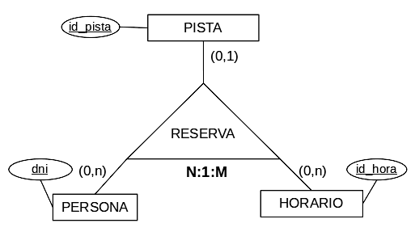
- RESERVA (dni, id_hora, id_pista)
CP: {dni, id_hora}
CF: dni → PERSONA {dni}
CF: id_hora → HORARIO {id_hora}
CF: id_pista → PISTA {id_pista}
VNN: id_pista
Al definir la tabla de este modo, para cada ocurrencia de la CP (una PERSONA y un HORARIO que haya reservado) solo se puede corresponder a una PISTA y además este campo no puede ser nulo o la relación no sería ternaria.
4.5.4. Cardinalidad N:1:1
La idea en este caso es que cualquier combinación de la clave de la entidad que actúa con cardinalidad N y una de las que actúan con cardinalidad 1 es una clave candidata, con lo que para la CP podemos elegir la que mejor nos convenga y a la otra combinación ponerle una restricción de unicidad. Finalmente para asegurar que la relación sea ternaria también se añade una restricción de valor no nulo al campo/s que no forma parte de la CP elegida.
Como ejemplo tomaremos una pequeña variación del anterior caso en el que consideramos que la PISTA-HORARIO solo se puede reservar por una PERSONA cada vez, que de hecho es más lógico. Con esto la relación pasa a ser N:1:1.
Veamos ventajas e inconvenientes del cambio; esta relación no permite saber quienes usan las PISTAs si hay varias PERSONAs, lo que debe ir en otra relación ternaria de cardinalidad N:1:M similar a la anterior. Pero al separar las RESERVAS del uso, se evita que PERSONAs no relacionadas puedan RESERVAR la misma PISTA en el mismo HORARIO (a la misma hora), cosa que sí podría ocurrir en la anterior, aunque podría evitarse con restricciones adicionales o usando una agregación PISTA-HORARIO en vez de una ternaria.
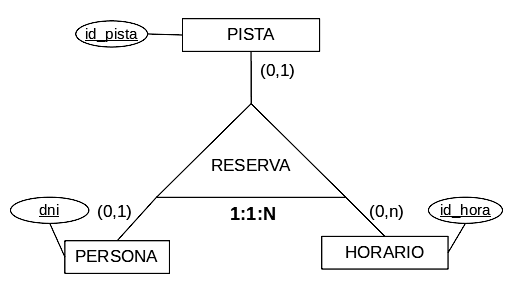
- RESERVA (id_hora, dni, id_pista)
CP: {id_hora, dni}
CF: id_hora → HORARIO {id_hora}
CF: dni → PERSONA {dni}
CF: id_pista → PISTA {id_pista}
VNN: id_pista
ÚNICO: {id_hora, id_pista}
Se elige como clave id_hora+dni pero id_hora+id_pista sería igualmente válido. Es una clave candidata, y por eso a esa pareja se le añade la restricción de unicidad, indicando que para cualquiera de esas parejas solo puede haber un valor de la tercera entidad en la relación. Es decir, por cada HORARIO-PERSONA solo una PISTA y por cada HORARIO-PISTA solo una PERSONA; esto representa los unos de las cardinalidades. En cambio, las parejas PERSONA-PISTA pueden corresponderse a tantos HORARIOS como sea necesario (N).
La clave foránea correspondiente a la entidad que queda fuera de la clave escogida, id_pista, y lleva una restricción VNN para asegurar que la relación es ternaria. Si se elige la otra clave candidata, id_hora+id_pista, la restricción de unicidad iría a id_hora+dni y la restricción VNN a id_hora.
4.5.5. Cardinalidad 1:1:1
Para este último caso todas las parejas en la relación solo pueden tener como máximo una correspondencia de la tercera entidad en la relación, así que cualquier combinación de las claves de 2 de las 3 entidades es una clave candidata, podemos elegir la que queramos como CP. Puesto que entre 3 elementos hay 3 combinaciones posibles, las otras 2 combinaciones de claves no elegidas llevarán cada una la restricción de unicidad. De nuevo, para asegurar que la relación sea ternaria, también se añade una restricción de valor no nulo al campo/s que no forma parte de la CP elegida.
Para este ejemplo vamos a suponer que diseñamos una serie de ACTIVIDADES individuales a realizar sobre un conjunto de bases de datos (BD) por el ALUMNADO para unas sesiones de prácticas. Para cada ACTIVIDAD el ALUMNADO intercambia la BD sobre la que trabaja para mostrar la importancia de una buena documentación y organización de las mismas. Se establece que cada ACTIVIDAD-BD es trabajada por una sola ocurrencia de ALUMNADO, cada ACTIVIDAD-ALUMNADO se realiza sobre una sola BD (con eso ya se ha practicado ese punto de la materia), y el ALUMNADO trabaja en cada BD una sola ACTIVIDAD. La relación es por tanto 1:1:1.
Que no te confundan las relaciones binarias. Como puedes ver, 1:1:1 no implica que cada entidad de manera individual no pueda participar más de una vez en la relación. Por ejemplo el ALUMNADO puede realizar varias ACTIVIDADES, siempre que cambie de BD y esa actividad no se haya realizado antes sobre la misma.
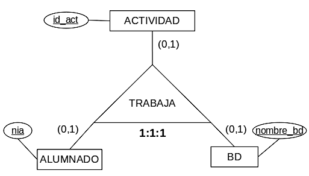
- TRABAJA (nia, id_act, nombre_bd)
CP: {nia, id_act}
CF: nia → ALUMNADO {nia}
CF: id_act → ACTIVIDAD {id_act}
CF: nombre_bd → BD {nombre}
VNN: nombre_bd
ÚNICO: {nia, nombre_bd}
ÚNICO: {id_act, nombre_bd}
Elegimos las claves de 2 de las 3 entidades como CP, en este caso nia+id_act, pero cualquiera de las otras 2 combinaciones sería perfectamente válida. A partir de ahí simplemente añadimos VNN a la clave que ha quedado fuera de la combinación elegida y marcamos como únicas las 2 combinaciones no elegidas, nia+nombre_bd e id_act+nombre_bd.
4.6. Atributos de relación
Hasta ahora hemos ignorado los atributos de relación, pero estos también deben ser tenidos en cuenta a la hora de transformar una relación en una tabla. En realidad los atributos de relación son fáciles de resolver ya que simplemente se añaden:
- A la tabla resultante de la relación si se crea una nueva tabla.
- A la tabla donde aparece una clave foránea si ese es el caso.
Por otro lado, si el o los atributos de la relación tienen restricciones de identificación, se añaden a la clave principal de la tabla donde estén junto al resto de atributos identificadores.
4.7. Transformación de especializaciones
Cuando tenemos especializaciones podemos optar por cuatro posibilidades de transformación. Cada tipo de transformación se adaptará a unas circunstancias concretas, no se corresponden exactamente con los tipos de especialización.
- Podemos optar por crear una tabla para el supertipo y otra tabla para cada uno de los subtipos encontrados. La clave primaria del supertipo lo será también en cada una de las tablas obtenidas a partir de los subtipos; es igualmente una clave foránea referenciando al supertipo.
- Ideal para relaciones parciales y solapadas.
- Recomendable también cuando existan relaciones diferenciadas en los subtipos y en el supertipo, independientemente del tipo de especialización.
- Es la más general y la opción a escoger en caso de duda.
- Si la especialización es total y/o disyunta se deben añadir restricciones adicionales que lo indiquen. Por ejemplo: "Todas las ocurrencias del supertipo deben estar en alguno de los subtipos"/"Una ocurrencia no puede estar en varios subtipos". Donde se cambie supertipo/subtipos por los nombres de las tablas en cada caso.
- Otra opción sería crear una tabla para cada subtipo incorporando en cada una todos los atributos del supertipo. NO se crearía la tabla del supertipo pues sus campos se han incorporado en cada una de las tablas de los subtipos.
- Esta opción solo sería válida para especializaciones totales y no es recomendable en solapadas, pues añadiría redundancia de datos.
- Ideal para totales disyuntas que no tengan relaciones afectando al supertipo. Si hay relaciones afectando al supertipo obliga a "separarlas" en una distinta para cada subtipo y luego son más difíciles de consultar.
- La tercera posibilidad es crear una sola tabla para el supertipo y añadir en ella todos los atributos de los subtipos añadiendo además un campo (por ejemplo tipo) para identificar a qué tipo de especialización corresponde esa tupla.
- Esta opción solo sería válida para especializaciones disyuntas.
- Solo recomendable para pocos subtipos con pocos atributos. Además, los subtipos deberían no tener relaciones propias o éstas consultarse poco.
- La cuarta opción sería crear una sola tabla para el supertipo añadiendo los atributos de los subtipos y añadir un campo booleano para indicar si pertenece a cada uno de los subtipos.
- Adaptación de la anterior para representar solapadas, con las mismas limitaciones que ésta.
- Además solo es recomendable en relaciones muy solapadas, donde la mayoría de ocurrencias estén en muchos subtipos.
En resumen, la primera opción es la más genérica y comúnmente usada; exige añadir restricciones adicionales si no es parcial solapada pero se adapta a cualquier especialización. La segunda se usa para totales disyuntas sin relaciones (o poco relevantes) en el supertipo y las otras 2 solo son recomendables en casos muy concretos con pocas o sin relaciones en los subtipos.
Veamos un ejemplo:
Se supone un supertipo EMPLEADOS que se especializa en los subtipos COMERCIAL, TÉCNICO y DIRECTIVO, cada uno con un atributo propio. Esta especialidad será parcial, hay otros tipos de empleados no especificados, y solapada, un EMPLEADO puede pertenecer a varios de los subtipos.
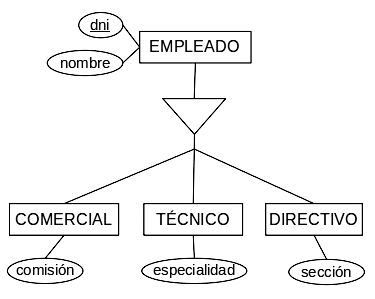
Primera opción:
Una tabla para el supertipo y una para cada subtipo y todas con la misma clave primaria, pero siendo clave foránea. Es la más recomendable, ya que indica más claramente que es una especialización. Puesto que en este caso es parcial solapada no requiere restricciones adicionales
-
EMPLEADOS (dni, nombre)
COMERCIAL (dni, comision)
CF: dni → EMPLEADOS {dni}TÉCNICO (dni, especialidad)
CF: dni → EMPLEADOS {dni}DIRECTIVO (dni, seccion)
CF: dni → EMPLEADOS {dni}
Suponiendo que fuese total, se debería añadir la restricción de integridad:
- Todos los EMPLEADOS deben estar, al menos en una de estas 3 tablas: COMERCIAL,TÉCNICO o DIRECTIVO.
Si fuese disyunta:
- Cada dni solo aparece en una de las 3 tablas: COMERCIAL, TÉCNICO o DIRECTIVO
Si fuese total disyunta:
- Cada dni en EMPLEADOS tiene que aparecer en una de las 3 tablas (COMERCIAL, TÉCNICO o DIRECTIVO) y solo en una.
Segunda opción:
Sin tabla para el supertipo e incorporando sus atributos a las tablas de los subtipos. En este caso esta opción NO ES CORRECTA, ya que puede haber EMPLEADOS que NO estén en ninguno de estos subtipos; debería ser total para funcionar. Además solo es recomendable si no hay relaciones importantes en EMPLEADOS.
-
COMERCIAL (dni, nombre, comision)
TÉCNICO (dni, nombre, especialidad)
DIRECTIVO (dni, nombre, sección)
Tercera Opción:
Todo en una tabla con un campo añadido para distinguir el tipo de especialización. Esta opción no sería correcta, ya que puede que haya EMPLEADOS que estén en más de un subtipo: debería ser disyunta para funcionar. En cada ocurrencia solo los campos correspondientes a su subtipo tendrán algún valor, los otros se quedarán con valor nulo.
- EMPLEADOS (dni, nombre, tipo, comision, especialidad, seccion)
Cuarta Opción:
Todo en una tabla con un campo booleano añadido por cada especialización. Por cada subtipo al que no se pertenece, en esa ocurrencia el booleano respectivo se pone a FALSE y los atributos relacionados se quedan con valor nulo. Ya se puede ver que no parece la forma óptima de representar la especialización a menos que muchos EMPLEADOS sean una combinación de TÉCNICO, COMERCIAL y DIRECTIVO.
- EMPLEADOS (dni, nombre, es_com, comision, es_tec, especialidad, es_dir, seccion)
4.8. Transformación de agregaciones
Las agregaciones se suelen resolver creando una tabla para la entidad agregada, que puede contener los atributos de la agregación en caso de que existan. Pero cuando hablamos de agregaciones que contienen una sola relación, y en este curso nos vamos a limitar a ellas, esta tabla se corresponde con la resolución de la relación que contienen. Es decir, que:
- Para una relación reflexiva/binaria N:M o para cualquier ternaria la agregación es directamente la propia tabla creada al resolver la relación, ya que las ocurrencias de esta tabla son las que participan en la agregación.
- Para una relación reflexiva/binaria 1:N la relación se resuelve en una de las tablas ya existentes, y por tanto la agregación son las ocurrencias de la tabla con la clave foránea donde esta no es nula. Esto nos permite aprovechar la propia tabla, aunque con algunos matices.
- Si la participación es (1,1) todas las ocurrencias de la tabla participan en la agregación (la clave foránea es no nula), por lo que la tabla con la clave foránea es la tabla de la agregación directamente.
- Si la participación es (0,1) hay ocurrencias que no participan en la relación y no forman parte de la agregación, por lo que tenemos 2 opciones:
- Usar igualmente la tabla con la clave foránea como la agregación, pero en las relaciones en que participe la agregación se añade una restricción adicional: "Solo pueden participar ocurrencias de la tabla de agregación que tengan valor no nulo en la clave foránea".
- En vez de resolver la relación 1:N de dentro de la agregación, crear una subentidad de la tabla donde se debía mover la clave foránea y mover allí la relación, ahora con participación (1:1). Con esto, tenemos la tabla original con todas las ocurrencias y datos, y una tabla subentidad que solo contiene las ocurrencias que participan en la relación, es decir, la tabla de agregación.
Esto puede parecer enrevesado pero en realidad es sencillo, y en la mayoría de los casos se resuelve de manera automática. Veamos un ejemplo:
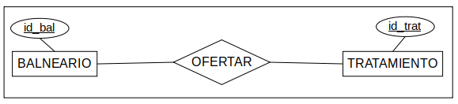
Si la cardinalidad es N:M:
La tabla OFERTAR que crea la relación es directamente la tabla de la agregación, no hace falta hacer nada. En todo caso si la agregación tuviese algún atributo se añadiría a la tabla.
-
BALNEARIO (id_bal)
TRATAMIENTO (id_trat)
(-- Ofertar es la agregación)
OFERTAR (id_bal, id_trat, ...)
CF: id_bal → BALNEARIO {id_bal}
CF: id_trat → TRATAMIENTO {id_trat}
Los puntos suspensivos son para representar posibles campos de la agregación, aunque no se ha especificado ninguno.
Si la cardinalidad es 1:N (los tratamientos son exclusivos de un balneario):
Primera opción, resolvemos la relación 1:N y tomamos la tabla TRATAMIENTO como la tabla de la agregación; ideal si la participación de TRATAMIENTO es (1,1).
-
BALNEARIO (id_bal)
TRATAMIENTO (id_trat, id_bal, ...)
CF: id_bal → BALNEARIO {id_bal}
Si TRATAMIENTO tiene participación (0,1) en la relación, entonces no todas las ocurrencias de TRATAMIENTO participan en la agregación, por lo que añadimos una restricción adicional. "Para participar en relaciones con la agregación, id_bal no puede ser nulo".
Obviamente otras relaciones directas con TRATAMIENTO no tienen esta limitación, solo las que involucren a la agregación.
Segunda opción, creamos una tabla de agregación y movemos la relación 1:N a ella, ahora con participación (1,1). La tabla TRATAMIENTO se queda como estaba y pierde la relación OFERTAR, aunque conservaría otras relaciones que tuviese. Con el nuevo esquema E-R de la situación puede que se entienda mejor, recuerda que se supone que OFERTAR apunta a TRATAMIENTO y tiene participación (1,1).
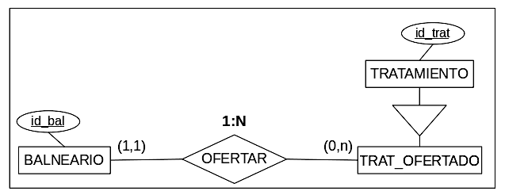
-
-- BALNEARIO y TRATAMIENTO conservan sus campos y relaciones salvo OFERTAR
TRAT_OFERTADO (id_trat, id_bal*, ... )
CF: id_trat → TRATAMIENTO {id_trat}
CF: id_bal → BALNEARIO {id_bal}
VNN: id_bal
Con esto, la tabla TRATAMIENTO conserva todas sus ocurrencias y datos, y la tabla TRAT_OFERTADO contiene las claves principales de las ocurrencias de la relación OFERTAR, con lo que tiene participación (1,1) y se resuelve como el primer caso, convirtiéndose en la tabla de la agregación.
Transformación de relaciones con agregaciones
Si una o varias agregaciones participan en relaciones se aplican las mismas reglas que para las relaciones normales, las tablas de agregación, sean las que sean, se tratan como si fueran tablas normales. Por tanto, una vez resuelta la agregación no tienen ninguna complicación, solo conviene recordar la restricción adicional a las ocurrencias en caso que no se haya creado una tabla nueva para la agregación si contenía una relación 1:N con participación (0,1).
Veamos unos ejemplos:
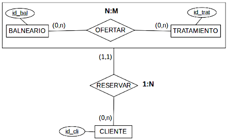
Tenemos una agregación OFERTAR formada por una relación N:M y sus entidades. Sobre esa agregación el CLIENTE debe RESERVAR alguna de las parejas de TRATAMIENTO-BALNEARIO existentes en la agregación. Por tanto simplemente se crea la tabla N:M ofertar y esta tabla se usa para resolver la relación 1:N con CLIENTE.
-
BALNEARIO (id_bal)
TRATAMIENTO (id_trat)
OFERTAR (id_bal, id_trat)
CF: id_bal → BALNEARIO {id_bal}
CF: id_trat → TRATAMIENTO {id_trat}CLIENTE (id_cli, id_bal, id_trat)
CF: {id_bal,id_trat} → OFERTAR {id_bal,id_trat}
VNN: id_bal
VNN: id_trat
La clave foránea en CLIENTE es compuesta, apunta a OFERTAR (tabla de agregación) y no puede tomar valores nulos porque la participación mínima en la relación RESERVAR de CLIENTE es 1.
Si RESERVAR fuese de cardinalidad N:M simplemente se crearia como tabla con las claves de CLIENTE y OFERTAR.
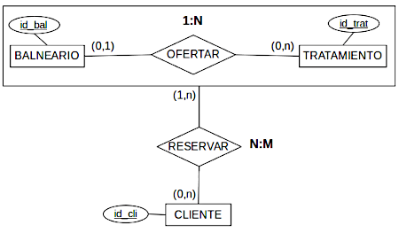
Ahora le hemos dado la vuelta a la situación y la agregación está formada por una relación OFERTAR 1:N, pero la relación con la agregación, RESERVAR, es N:M. Los TRATAMIENTOs son exclusivos de un BALNEARIO y pueden ser reservados por varios CLIENTEs, pero obviamente solo los que están en OFERTAR.
Si la participación mínima de TRATAMIENTO en OFERTAR fuese 1, todas sus tuplas pueden participar en RESERVAR y por tanto se puede resolver la agregación con TRATAMIENTO y relacionar allí RESERVAR, sería completamente equivalente a ignorar la agregación. Pero como la mínima es 0 (en OFERTAR), entonces puede haber tuplas en TRATAMIENTO sin BALNEARIO asignado, y esas no forman parte de la agregación. Esto obliga a usar una restricción adicional o a crear una tabla de agregación.
-
BALNEARIO (id_bal)
TRATAMIENTO (id_trat, id_bal)
CAj: id_bal → BALNEARIO {id_bal}CLIENTE (id_cli)
RESERVAR (id_cli, id_trat)
CF: id_cli → CLIENTE {id_cli}
CF: id_trat → TRATAMIENTO {id_trat}
RESTRICCIONES DE INTEGRIDAD (por pérdida semántica):- id_trat debe ser de una tupla de TRATAMIENTO que tenga id_bal NO NULO
- Todas las tuplas de CLIENTE deben estar en RESERVAR (por (1,n))
-
(-- Alternativa, creamos una tabla de agregación además de TRATAMIENTO)
BALNEARIO (id_bal)TRATAMIENTO (id_trat)
TRAT_OFERTADO (id_trat, id_bal*, ... )
CF: id_trat → TRATAMIENTO {id_trat}
CF: id_bal → BALNEARIO {id_bal}
VNN: id_balRESERVAR (id_cli, id_trat)
CF: id_cli → CLIENTE {id_cli}
CF: id_trat → TRAT_OFERTADO {id_trat}
RESTRICCIÓN DE INTEGRIDAD (por pérdida semántica):- Todas las tuplas de CLIENTE deben estar en RESERVAR (por (1,n))
La restricción de CLIENTE se debe a la participación mínima 1 en RESERVAR, se da siempre que hay participaciones (1,n).
Respecto a la otra restricción, es necesaria en el primer caso para evitar que se reserven TRATAMIENTOS que no corresponden a ningún BALNEARIO, ya que estos no forman parte de la agregación.
En el segundo caso, la tabla de agregación TRAT_OFERTADO es simplemente un extracto (especialización) para indicar qué tuplas de TRATAMIENTO participan en la relación (lo que en realidad es tan sencillo como ver cuales tienen id_bal NO_NULO), pero con esta tabla se evita la restricción adicional y el diseño puede reflejar toda la información. Si la participación mínima de TRATAMIENTO en OFERTAR fuese 1, esta tabla sería completamente redundante e innecesaria.